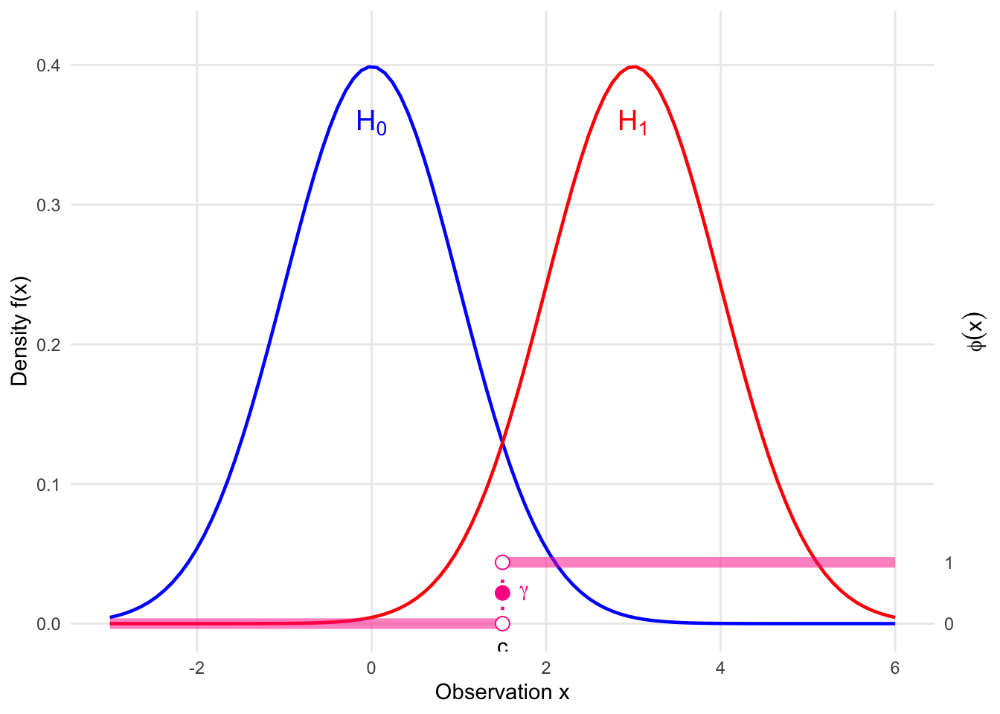

4 Likelihood-based Hypothesis Testing
4.1 Formulation for Hypothesis Testing
4.1.1 Hypothesis
We formulate the problem of hypothesis testing as deciding between two competing claims about a parameter \(\theta\):
\[ H_0: \theta \in \Theta_0 \quad \text{(Null Hypothesis)} \]
\[ H_1: \theta \in \Theta_1 \quad \text{(Alternative Hypothesis)} \]
Definition 4.1 (Simple and Composite Hypotheses) A hypothesis is called simple if it specifies a single value for the parameter (e.g., \(\Theta_0\) contains only one point). It is called composite if it specifies more than one value.
Example 4.1 (Normal Mean Test) Let \(X_1, \dots, X_n \overset{iid}{\sim} N(\mu, \sigma^2)\).
- If \(\sigma^2\) is known, \(H_0: \mu = \mu_0\) is a simple hypothesis.
- If \(\sigma^2\) is unknown, \(H_0: \mu = \mu_0\) is a composite hypothesis (since \(\sigma^2\) can vary).
4.1.2 Test Functions
A test is defined by a critical region \(C_\alpha\) such that we reject \(H_0\) if the data \(x \in C_\alpha\). Equivalently, we can define a test function \(\phi(x)\) representing the probability of rejecting \(H_0\) given data \(x\).
- A non-randomized test is given as follows:
\[ \phi(x) = I(x \in C_\alpha) = \begin{cases} 1 & \text{if } x \in C_\alpha \text{ (Reject } H_0 \text{)} \\ 0 & \text{otherwise} \end{cases} \]
A randomized test, \(\phi(x)\) can take values in \([0, 1]\), which can be expressed typically as follows:
\[ \phi(x) = \begin{cases} 1 & \text{if } x \in C_1 \\ \gamma & \text{if } x \in C_* \\ 0 & \text{otherwise} \end{cases} \]
where:
- \(C_1\) is the region where we strictly reject \(H_0\).
- \(C_*\) is the boundary region (often where \(T(x) = k\)) where we reject \(H_0\) with probability \(\gamma\).
More generally, \(\phi(x)\) is just a function of \(x\) with values in \([0,1]\), which represents the probability that we will reject \(H_0\).
Example 4.2 (Randomized Test for Binomial) Let \(X \sim \text{Bin}(n=10, \theta)\). Consider testing \(H_0: \theta = 1/2\) vs \(H_1: \theta > 1/2\) with target size \(\alpha = 0.05\).
Suppose we choose a critical region \(X \ge k\).
- If \(k=9\), \(P(X \ge 9 | \theta=0.5) \approx 0.0107\).
- If \(k=8\), \(P(X \ge 8 | \theta=0.5) \approx 0.0547\).
Since we cannot achieve exactly 0.05 with a non-randomized test (the survival function jumps over 0.05), we must use a randomized test function.
The randomized test is defined as:
\[ \phi(x) = \begin{cases} 1 & \text{if } x \in C_1 \text{ (i.e., } x \ge 9) \\ \gamma & \text{if } x \in C_* \text{ (i.e., } x = 8) \\ 0 & \text{otherwise} \end{cases} \]
From the figure, we see that \(\alpha = 0.05\) lies between \(P(X \ge 9)\) and \(P(X \ge 8)\). We always reject the “tail” where probabilities are strictly less than \(\alpha\) (here \(x \ge 9\)). At the boundary \(x=8\), we cannot reject with probability 1 (which would give total size 0.0547), nor with probability 0 (which would give total size 0.0107).
We choose \(\gamma\) to bridge this gap:
\[ \begin{aligned} \alpha &= P(X \ge 9) + \gamma \cdot P(X = 8) \\ 0.05 &= 0.01074 + \gamma \cdot (P(X \ge 8) - P(X \ge 9)) \\ 0.05 &= 0.01074 + \gamma \cdot (0.05469 - 0.01074) \end{aligned} \]
Solving for \(\gamma\):
\[ \gamma = \frac{0.05 - 0.01074}{0.04395} \approx \frac{39}{44} \approx 0.89 \]
4.1.3 Size
Definition 4.2 (Size of a Test) The size of a test \(\phi(x)\) is the maximum probability of rejecting the null hypothesis when it is true:
\[ \text{Size}(\phi) = \sup_{\theta \in \Theta_0} W_\phi(\theta) = \sup_{\theta \in \Theta_0} E_\theta[\phi(X)] \]
4.1.4 Power
We distinguish between the power function varying over parameters and the power metric of a specific test.
- Power Function (\(W_\phi(\theta)\)) The probability of rejecting \(H_0\) as a function of the parameter \(\theta\):
\[ W_\phi(\theta) = E_\theta[\phi(X)] \]
- Power of the Test (\(\text{Power}(\phi)\)) In the context of a specific alternative hypothesis (e.g., \(H_1: \theta = \theta_1\)), we define the power as a scalar functional of \(\phi\):
\[ \text{Power}(\phi) = E_{\theta_1}[\phi(X)] \]
Ideally, we want:
- \(W_\phi(\theta) \le \text{Size}(\phi)\) for all \(\theta \in \Theta_0\) (Control Type I error).
- \(\text{Power}(\phi)\) to be as large as possible (Maximize sensitivity to \(H_1\)).
Code
library(ggplot2)
# 1. Define Parameters
mu0 <- 0
mu1 <- 3
sigma <- 1
c_val <- 1.5 # Critical value
gamma_val <- 0.5 # Randomization constant
# 2. Scaling Constants
max_dens <- dnorm(mu0, mean = mu0, sd = sigma)
y_limit <- max_dens * 1.1
phi_scale <- 0.1 * y_limit
# 3. Define the Test Function phi(x) (Single Test)
# Step function: 0 -> 1 at c_val
df_phi <- data.frame(
x_start = c(-3, c_val),
x_end = c(c_val, 6),
y_start = c(0, phi_scale),
y_end = c(0, phi_scale)
)
ggplot() +
# --- Layer 1: Densities (Solid Lines, No Fill) ---
# H0: Normal(0, 1) - Blue (Cool)
stat_function(fun = dnorm, args = list(mean = mu0, sd = sigma),
color = "blue", size = 0.8) +
# H1: Normal(3, 1) - Red (Hot)
stat_function(fun = dnorm, args = list(mean = mu1, sd = sigma),
color = "red", size = 0.8) +
# --- Layer 2: Test Function phi(x) (Thick Pink Line) ---
# The horizontal segments
geom_segment(data = df_phi,
aes(x = x_start, xend = x_end, y = y_start, yend = y_end),
color = "deeppink", size = 2.5, alpha = 0.5) +
# The vertical threshold line
geom_segment(aes(x = c_val, xend = c_val, y = 0, yend = phi_scale),
linetype = "dotted", color = "deeppink", size = 0.8) +
# Points at discontinuity
geom_point(aes(x = c_val, y = gamma_val * phi_scale),
color = "deeppink", size = 3) +
geom_point(aes(x = c_val, y = 0), size = 3, shape = 21, fill = "white", color = "deeppink") +
geom_point(aes(x = c_val, y = phi_scale), size = 3, shape = 21, fill = "white", color = "deeppink") +
# --- Layer 3: Annotations ---
# Gamma label
annotate("text", x = c_val + 0.2, y = gamma_val * phi_scale,
label = expression(gamma), hjust = 0, fontface = "bold", color = "deeppink") +
# H0 / H1 Labels
annotate("text", x = mu0, y = max_dens * 0.9,
label = expression(H[0]), color = "blue", size = 5) +
annotate("text", x = mu1, y = max_dens * 0.9,
label = expression(H[1]), color = "red", size = 5) +
# Critical Value Label
annotate("text", x = c_val, y = -0.01, label = "c", vjust = 1) +
# --- Layer 4: Scales ---
scale_y_continuous(
name = "Density f(x)",
limits = c(-0.02, y_limit),
expand = c(0, 0),
# Secondary Axis for phi
sec.axis = sec_axis(~ . / phi_scale,
name = expression(phi(x)),
breaks = c(0, 1))
) +
scale_x_continuous(name = "Observation x", limits = c(-3, 6)) +
theme_minimal() +
theme(
axis.title.y.right = element_text(angle = 90, vjust = 0.5),
panel.grid.minor = element_blank()
)

4.2 The Neyman-Pearson Lemma
Consider testing a simple null against a simple alternative: \(H_0: \theta = \theta_0\) vs \(H_1: \theta = \theta_1\).
We define the Likelihood Ratio \(\Lambda(x)\) as:
\[ \Lambda(x) = \frac{f_1(x)}{f_0(x)} = \frac{f(x; \theta_1)}{f(x; \theta_0)} \]
Definition 4.3 (Likelihood Ratio Test (LRT)) A test \(\phi(x)\) is a Likelihood Ratio Test if it has the form:
\[ \phi_{\text{LRT}}(x) = \begin{cases} 1 & \text{if } \Lambda(x) > k \\ \gamma(x) & \text{if } \Lambda(x) = k \\ 0 & \text{if } \Lambda(x) < k \end{cases} \]
where \(k \ge 0\) is a constant and \(0 \le \gamma(x) \le 1\).
4.2.1 Neyman-Pearson Lemma
Theorem 4.1 (Neyman-Pearson Lemma)
Optimality: For any \(k\) and \(\gamma(x)\), the LRT \(\phi_0(x)\) defined above has maximum power among all tests whose size is less than or equal to the size of \(\phi_0(x)\).
Existence: Given \(\alpha \in (0, 1)\), there exist constants \(k\) and \(\gamma_0\) such that the LRT defined by this \(k\) and \(\gamma(x) = \gamma_0\) has size exactly \(\alpha\).
Uniqueness: If a test \(\phi\) has size \(\alpha\) and is of maximum power among all tests of size \(\alpha\), then \(\phi\) is necessarily an LRT, except possibly on a set of measure zero under \(H_0\) and \(H_1\).
4.2.2 A Derivation with The Lagrange Multiplier Approach
To make the optimality of the Likelihood Ratio Test (LRT) intuitive, we can frame the search for the best test function \(\phi(x)\) as a constrained optimization problem.
We want to maximize the power of the test:
\[ \text{Power}(\phi) = \int \phi(x) f_1(x) dx \]
subject to the constraint on the size of the test \(\alpha\):
\[ \text{Size}(\phi) = \int \phi(x) f_0(x) dx = \alpha \]
Using the method of Lagrange multipliers, we define the objective function \(L\) with a multiplier \(k\):
\[ L(\phi, k) = \int \phi(x) f_1(x) dx - k \left( \int \phi(x) f_0(x) dx - \alpha \right) \]
Rearranging the terms inside the integral, we get:
\[ L(\phi, k) = \int \phi(x) [f_1(x) - k f_0(x)] dx + k\alpha \]
To maximize \(L\) with respect to \(\phi(x)\), we look at the integrand. Since \(0 \le \phi(x) \le 1\), we should choose \(\phi(x)\) to be as large as possible whenever its coefficient is positive, and as small as possible whenever its coefficient is negative:
- If \(f_1(x) - k f_0(x) > 0\), set \(\phi(x) = 1\).
- If \(f_1(x) - k f_0(x) < 0\), set \(\phi(x) = 0\).
- If \(f_1(x) - k f_0(x) = 0\), the value of \(\phi(x)\) does not affect the integral (this is where \(\gamma\) comes in).
This decision rule is equivalent to:
\[ \phi(x) = \begin{cases} 1 & \text{if } \frac{f_1(x)}{f_0(x)} > k \\ 0 & \text{if } \frac{f_1(x)}{f_0(x)} < k \end{cases} \]
This is precisely the form of the Likelihood Ratio Test. The “shadow price” or Lagrange multiplier \(k\) represents the critical threshold that balances the gain in power against the cost of increasing the Type I error.
4.2.3 Proof of NP Lemma
Proof. Proof of (a) Optimality: Let \(\phi_{\text{LRT}}\) be the LRT with size \(\alpha\), and \(\phi\) be any other test with size \(\le \alpha\). Define the function \(U(x)\) as the difference in test functions weighted by the linear combination of densities:
\[ U(x) = (\phi_{}(x) - \phi(x))(f_1(x) - k f_0(x)) \]
We analyze the sign of \(U(x)\) by looking at the sign of its two factors in three cases:
If \(f_1(x) - k f_0(x) > 0\) (implies \(\Lambda(x) > k\)). Since \(\phi_{\text{LRT}}(x) = 1\) and \(\phi(x) \le 1\), we have:
\[ \begin{aligned} \phi_{\text{LRT}}(x) - \phi(x) &\ge 0 \\ U(x) = (\phi_{\text{LRT}}(x) - \phi(x))(f_1(x) - k f_0(x)) &\ge 0 \end{aligned} \]
If \(f_1(x) - k f_0(x) < 0\) (implies \(\Lambda(x) < k\)). Since \(\phi_{\text{LRT}}(x) = 0\) and \(\phi(x) \ge 0\), we have:
\[ \begin{aligned} \phi_{\text{LRT}}(x) - \phi(x) &\le 0 \\ U(x) = (\phi_{\text{LRT}}(x) - \phi(x))(f_1(x) - k f_0(x)) &\ge 0 \end{aligned} \]
If \(f_1(x) - k f_0(x) = 0\). The product is zero regardless of the test functions.
\[ U(x) = 0 \]
Combining these cases, we conclude that the product is non-negative for all \(x\):
\[ U(x) = (\phi_{\text{LRT}}(x) - \phi(x))(f_1(x) - k f_0(x)) \ge 0 \]
Therefore, integrating \(U(x)\) over the entire domain:
\[ \int U(x) dx = \int (\phi_{\text{LRT}}(x) - \phi(x))(f_1(x) - k f_0(x)) dx \ge 0 \]
Expanding the integral:
\[ \int \phi_{\text{LRT}}(x) f_1(x) \, dx - \int \phi(x) f_1(x) \, dx - k \left( \int \phi_{\text{LRT}}(x) f_0(x) \, dx - \int \phi(x) f_0(x) \, dx \right) \ge 0 \] Converting to expectations:
\[ E_{\theta_1}[\phi_{\text{LRT}}] - E_{\theta_1}[\phi] \ge k (E_{\theta_0}[\phi_{\text{LRT}}] - E_{\theta_0}[\phi]) \]
Since \(E_{\theta_0}[\phi_{\text{LRT}}] =\text{Size}(\phi_{\text{LRT}})= \alpha\) and we require that \(E_{\theta_0}[\phi] = \text{Size}(\phi)\le \alpha\),
\[
E_{\theta_0}[\phi_{\text{LRT}}] - E_{\theta_0}[\phi] \ge 0
\]
Thereore, given that \(k \ge 0\):
\[ \text{Power}(\phi_{\text{LRT}}) \ge \text{Power}(\phi) \]
Proof of (b) Existence:
Let \(G(k) = P_{\theta_0}(\Lambda(X) \le k)\). \(G(k)\) is the cumulative distribution function of the random variable \(\Lambda(X)\), so it is non-decreasing. We seek \(k_0\) such that \(1 - G(k_0) \approx \alpha\). Because of discrete jumps, we might not hit \(\alpha\) exactly. We choose \(k_0\) such that:
\[ P_{\theta_0}(\Lambda(X) > k_0) \le \alpha \le P_{\theta_0}(\Lambda(X) \ge k_0) \]
Set \(\gamma_0 = \frac{\alpha - P_{\theta_0}(\Lambda(X) > k_0)}{P_{\theta_0}(\Lambda(X) = k_0)}\).
Proof of (c) Uniqueness
Let \(\phi_{\text{LRT}}\) be the LRT of size \(\alpha\). Suppose there exists another test \(\phi\) that is also Most Powerful (MP) with size \(\le \alpha\). We wish to show that \(\phi(x) = \phi_{\text{LRT}}(x)\) for almost all \(x\) where \(f_1(x) \ne k f_0(x)\).
As established in the optimality proof, the function: \[ U(x) = (\phi_{\text{LRT}}(x) - \phi(x))(f_1(x) - k f_0(x)) \] is non-negative for all \(x\). Since both tests are MP, they have the same power: \(E_{\theta_1}[\phi_{\text{LRT}}] = E_{\theta_1}[\phi]\).
From the integral of \(U(x)\), we have: \[ 0 \le \int U(x) dx = (E_{\theta_1}[\phi_{\text{LRT}}] - E_{\theta_1}[\phi]) - k(E_{\theta_0}[\phi_{\text{LRT}}] - E_{\theta_0}[\phi]) \]
Substituting the equality of power: \[ 0 \le -k(\alpha - E_{\theta_0}[\phi]) \]
Since \(k > 0\) and \(E_{\theta_0}[\phi] \le \alpha\), the term \(-k(\alpha - E_{\theta_0}[\phi])\) is \(\le 0\). The only way for the integral of a non-negative function \(U(x)\) to be \(\le 0\) is if the integral is exactly zero: \[ \int (\phi_{\text{LRT}}(x) - \phi(x))(f_1(x) - k f_0(x)) \, dx = 0 \]
For the integral of a non-negative function to be zero, the integrand must be zero almost everywhere: \[ (\phi_{\text{LRT}}(x) - \phi(x))(f_1(x) - k f_0(x)) = 0 \quad \text{a.e.} \]
This implies that for any \(x\) where \(f_1(x) - k f_0(x) \ne 0\), we must have: \[ \phi_{\text{LRT}}(x) - \phi(x) = 0 \implies \phi(x) = \phi_{\text{LRT}}(x) \]
Thus, the test is unique except possibly on the boundary set \(\{x : f_1(x) = k f_0(x)\}\). If \(P_{\theta_0}(\Lambda(X) = k) = 0\) (as in continuous distributions like the Normal), the MP test is unique almost everywhere.
Code
library(ggplot2)
# 1. Define Parameters
mu0 <- 0
mu1 <- 3
sigma <- 1
c_lrt <- 2
gamma_val <- 0.5
# Scaling constants
max_dens <- dnorm(mu0, mean = mu0, sd = sigma)
y_limit <- max_dens * 1.1
phi_scale <- 0.1 * y_limit
# 2. Define Test Functions Data
df_lrt <- data.frame(
x_start = c(-3, c_lrt),
x_end = c(c_lrt, 6),
y_val = c(0, phi_scale),
Test = "phi[LRT]"
)
df_other <- data.frame(
x_start = c(-3, 0.5, 1, 3),
x_end = c(0.5, 1, 3,6),
y_val = c(0, phi_scale, 0, 0),
Test = "phi"
)
ggplot() +
# --- Layer 1: Densities (Solid Lines, No Fill) ---
stat_function(fun = dnorm, args = list(mean = mu0, sd = sigma),
color = "blue", size = 0.8) +
stat_function(fun = dnorm, args = list(mean = mu1, sd = sigma),
color = "red", size = 0.8) +
# --- Layer 2: Test Functions (Segments) ---
# 2a. LRT Segments (Thick, Transparent Pink)
geom_segment(data = df_lrt,
aes(x = x_start, xend = x_end,
y = y_val, yend = y_val,
color = Test, linetype = Test, size = Test),
alpha = 0.4) +
# Vertical connector for LRT
geom_segment(aes(x = c_lrt, xend = c_lrt, y = 0, yend = phi_scale),
color = "deeppink", linetype = "dotted", size = 0.5, alpha = 0.6) +
# 2b. Other Test Segments (Thin Black Opaque)
geom_segment(data = df_other,
aes(x = x_start, xend = x_end,
y = y_val, yend = y_val,
color = Test, linetype = Test, size = Test)) +
# Vertical connectors for Other Test
geom_segment(aes(x = 1, xend = 1, y = 0, yend = phi_scale),
color = "black", linetype = "dotted", size = 0.5) +
geom_segment(aes(x = 3, xend = 3, y = 0, yend = phi_scale),
color = "black", linetype = "dotted", size = 0.5) +
# --- Layer 3: Annotations ---
# LRT Gamma Point (Pink)
geom_point(aes(x = c_lrt, y = gamma_val * phi_scale),
color = "deeppink", size = 3) +
# Density Labels
annotate("text", x = mu0, y = max_dens * 0.9,
label = expression(H[0]), color = "blue", size = 5) +
annotate("text", x = mu1, y = max_dens * 0.9,
label = expression(H[1]), color = "red", size = 5) +
# --- Layer 4: Scales and Legend ---
scale_y_continuous(
name = "Density f(x)", limits = c(-0.02, y_limit), expand = c(0, 0),
sec.axis = sec_axis(~ . / phi_scale, name = expression(phi(x)), breaks = c(0, 1))
) +
scale_x_continuous(name = "Observation x", limits = c(-3, 6)) +
# Manual Legend Controls (FIXED using named vectors for labels)
scale_color_manual(name = "Test Function",
values = c("phi[LRT]" = "deeppink", "phi" = "black"),
labels = c("phi[LRT]" = expression(phi[LRT]), "phi" = expression(phi))) +
scale_linetype_manual(name = "Test Function",
values = c("phi[LRT]" = "solid", "phi" = "solid"),
labels = c("phi[LRT]" = expression(phi[LRT]), "phi" = expression(phi))) +
scale_size_manual(name = "Test Function",
values = c("phi[LRT]" = 4, # Extra Thick
"phi" = 1), # Thin
labels = c("phi[LRT]" = expression(phi[LRT]), "phi" = expression(phi))) +
theme_minimal() +
theme(
legend.position = "top",
legend.title = element_text(face = "bold"),
axis.title.y.right = element_text(angle = 90, vjust = 0.5),
panel.grid.minor = element_blank()
)
4.3 Uniformly Most Powerful (UMP) Tests
When the alternative hypothesis is composite (\(H_1: \theta \in \Theta_1\)), we seek a test that is “best” for all \(\theta \in \Theta_1\).
Definition 4.4 (Uniformly Most Powerful Test) A test \(\phi_0(x)\) of size \(\alpha\) is Uniformly Most Powerful (UMP) if:
- \(E_{\theta}[\phi_0(X)] \le \alpha\) for all \(\theta \in \Theta_0\).
- For any other test \(\phi(x)\) satisfying (1), \(E_{\theta}[\phi_0(X)] \ge E_{\theta}[\phi(X)]\) for all \(\theta \in \Theta_1\).

4.4 Monotone Likelihood Ratio (MLR)
Definition 4.5 (Monotone Likelihood Ratio) A family of densities \(\{f(x; \theta)\}\) has a Monotone Likelihood Ratio (MLR) with respect to a statistic \(T(x)\) if for any \(\theta_1 > \theta_0\), the ratio:
\[ \frac{f(x; \theta_1)}{f(x; \theta_0)} \]
is a non-decreasing function of \(T(x)\).
Common examples include the one-parameter Exponential Family: \(f(x; \theta) = h(x) c(\theta) \exp\{w(\theta) T(x)\}\). If \(w(\theta)\) is increasing, the family has MLR w.r.t \(T(x)\).
Example 4.3 Let \(X_1, \dots, X_n \overset{iid}{\sim} \text{Exp}(\theta)\) with pdf \(f(x) = \frac{1}{\theta} e^{-x/\theta}\). Test \[H_0: \theta = \theta_0 \text{ vs } H_1: \theta > \theta_0.\]
The Likelihood Ratio for \(\theta_1 > \theta_0\) is:
\[ \frac{L(\theta_1)}{L(\theta_0)} = \frac{\theta_1^{-n} e^{-\sum x_i / \theta_1}}{\theta_0^{-n} e^{-\sum x_i / \theta_0}} = \left(\frac{\theta_0}{\theta_1}\right)^n \exp \left\{ \left( \frac{1}{\theta_0} - \frac{1}{\theta_1} \right) \sum x_i \right\} \]
Since \(\theta_1 > \theta_0\), the term \((\frac{1}{\theta_0} - \frac{1}{\theta_1})\) is positive. Thus, \(\Lambda(x)\) is an increasing function of the sum \(T (x) = \sum x_i\).
Rejecting for large \(\Lambda(x)\) is equivalent to rejecting for \(T(x)=\sum x_i > C\).
Under \(H_0\), \(X_i \sim \text{Exp}(\theta_0)\), which is equivalent to \(\text{Gamma}(1, \theta_0)\). By the reproductive property of the Gamma distribution:
\[T = \sum_{i=1}^n X_i \sim \text{Gamma}(n, \theta_0)\]
Alternatively, using the relationship with the Chi-square distribution:
\[\frac{2T}{\theta_0} \sim \chi^2_{2n}\]
To find \(C\) for a significance level \(\alpha\), we set \(P(T > C | \theta_0) = \alpha\). Using the \(\chi^2\) transformation:
\[P\left(\frac{2T}{\theta_0} > \frac{2C}{\theta_0}\right) = \alpha \implies \frac{2C}{\theta_0} = \chi^2_{2n, \alpha}\]
Thus, the critical value is:
\[C = \frac{\theta_0}{2} \chi^2_{2n, \alpha}\]
where \(\chi^2_{2n, \alpha}\) is the upper-\(\alpha\) quantile of a Chi-square distribution with \(2n\) degrees of freedom.
Important
We note that the value \(C\) does not depend on \(\theta_1\).
4.4.1 Karlin-Rubin Theorem
Theorem 4.2 (Chebyshev’s Association Inequality) Let \(X\) be a random variable, and let \(f(x)\) and \(g(x)\) be two functions that are both non-decreasing (or both non-increasing). Then: \[ E[f(X)g(X)] \ge E[f(X)] \cdot E[g(X)] \] Equivalently, the covariance is non-negative: \(\text{Cov}(f(X), g(X)) \ge 0\).
Proof. Let \(Y\) be an independent copy of \(X\) (i.e., \(X\) and \(Y\) are i.i.d.). Consider the quantity: \[ \Delta = (f(X) - f(Y))(g(X) - g(Y)) \]
Since \(f\) and \(g\) are both non-decreasing (or both non-increasing), the terms \((f(X) - f(Y))\) and \((g(X) - g(Y))\) always share the same sign. Thus, their product is always non-negative: \[ \Delta \ge 0 \]
Taking the expectation: \[ E[(f(X) - f(Y))(g(X) - g(Y))] \ge 0 \]
Expanding the product and using linearity of expectation: \[ E[f(X)g(X)] - E[f(X)g(Y)] - E[f(Y)g(X)] + E[f(Y)g(Y)] \ge 0 \]
Since \(X\) and \(Y\) are i.i.d.:
- \(E[f(Y)g(Y)] = E[f(X)g(X)]\)
- \(E[f(X)g(Y)] = E[f(X)]E[g(Y)] = E[f(X)]E[g(X)]\) (Independence)
- \(E[f(Y)g(X)] = E[f(Y)]E[g(X)] = E[f(X)]E[g(X)]\) (Independence)
Substituting these back yields: \[ 2E[f(X)g(X)] - 2E[f(X)]E[g(X)] \ge 0 \]
Dividing by 2 proves the inequality: \[ E[f(X)g(X)] \ge E[f(X)]E[g(X)] \]
Theorem 4.3 (Karlin-Rubin Theorem) Suppose \(X\) has a distribution from a family with MLR with respect to \(T(X)\), and the distribution of \(T(X)\) is continuous. Consider testing \(H_0: \theta \le \theta_0\) vs \(H_1: \theta > \theta_0\).
The test:
\[ \phi(x) = \begin{cases} 1 & \text{if } T(x) > t_0 \\ 0 & \text{if } T(x) \le t_0 \end{cases} \]
where \(t_0\) is determined by \(P_{\theta_0}(T(X) > t_0) = \alpha\), is the UMP size \(\alpha\) test.
Proof. The Test: Define the test \(\phi_0(x)\) as:
\[ \phi_0(x) = \begin{cases} 1 & \text{if } T(x) > t_0 \\ 0 & \text{if } T(x) \le t_0 \end{cases} \]
where \(t_0\) is determined such that the power at the boundary is \(\alpha\), i.e., \(W_{\phi_0}(\theta_0) = \alpha\).
Monotonicity of the Power Function
We first establish that \(W_{\phi_0}(\theta)\) is non-decreasing. Let \(\theta_1 > \theta_0\). Define the test indicator function \(h(t) = \mathbb{I}(t > t_0)\) and the likelihood ratio \(\Lambda(t) = \frac{f_{\theta_1}(t)}{f_{\theta_0}(t)}\).
Because of the Monotone Likelihood Ratio (MLR) property, \(\Lambda(t)\) is a non-decreasing function of \(t\). The indicator function \(h(t)\) is clearly non-decreasing.
The power at \(\theta_1\) can be written as an integral involving the density under \(\theta_0\): \[ W_{\phi_0}(\theta_1) = \int_{-\infty}^{\infty} h(t) f_{\theta_1}(t) \, dt = \int_{-\infty}^{\infty} h(t) \frac{f_{\theta_1}(t)}{f_{\theta_0}(t)} f_{\theta_0}(t) \, dt = \int_{-\infty}^{\infty} h(t) \Lambda(t) f_{\theta_0}(t) \, dt \]
This integral is the expectation \(E_{\theta_0}[h(T) \Lambda(T)]\). By Chebyshev’s Association Inequality (Covariance Inequality), since both \(h(t)\) and \(\Lambda(t)\) are non-decreasing, the expectation of their product is at least the product of their expectations: \[ \int_{-\infty}^{\infty} h(t) \Lambda(t) f_{\theta_0}(t) \, dt \ge \left( \int_{-\infty}^{\infty} h(t) f_{\theta_0}(t) \, dt \right) \left( \int_{-\infty}^{\infty} \Lambda(t) f_{\theta_0}(t) \, dt \right) \]
We evaluate the two integrals on the right-hand side:
- The first term is the power at \(\theta_0\): \(\int h(t) f_{\theta_0}(t) \, dt = W_{\phi_0}(\theta_0)\).
- The second term integrates the likelihood ratio: \(\int \frac{f_{\theta_1}(t)}{f_{\theta_0}(t)} f_{\theta_0}(t) \, dt = \int f_{\theta_1}(t) \, dt = 1\).
Substituting these back, we get: \[ W_{\phi_0}(\theta_1) \ge W_{\phi_0}(\theta_0) \cdot 1 \] Thus, \(W_{\phi_0}(\theta)\) is non-decreasing.
Size Control
For the composite null \(H_0: \theta \le \theta_0\), we require the size to be at most \(\alpha\). Since \(W_{\phi_0}(\theta)\) is non-decreasing (from Step 1) and we explicitly set \(W_{\phi_0}(\theta_0) = \alpha\):
\[ W_{\phi_0}(\theta) \le W_{\phi_0}(\theta_0) = \alpha \quad \text{for all } \theta \le \theta_0 \]
This confirms \(\phi_0\) is a valid level-\(\alpha\) test.
Uniformly Most Powerful (UMP) via Neyman-Pearson Lemma
Let \(\phi'(x)\) be any other valid test of size \(\alpha\) for \(H_0\). This implies \(W_{\phi'}(\theta_0) \le \alpha\).
Consider any specific alternative \(\theta_1 > \theta_0\). Because the family has MLR, the likelihood ratio \(\Lambda(x)\) is increasing in \(T(x)\). Therefore, the test \(\phi_0\) (which rejects for large \(T\)) is identified by the Neyman-Pearson Lemma as the Most Powerful (MP) test for the simple hypothesis \(\theta_0\) vs \(\theta_1\).
Comparing the power of \(\phi_0\) and \(\phi'\) at this specific \(\theta_1\): \[ W_{\phi_0}(\theta_1) \ge W_{\phi'}(\theta_1) \] Since \(\theta_1\) was arbitrary, this inequality holds for all \(\theta > \theta_0\). Thus, \(\phi_0\) is the UMP test.

Example 4.4 (UMP Test for Exponential/Gamma) Let \(X_1, \dots, X_n \overset{iid}{\sim} \text{Exp}(\theta)\) with pdf \(f(x) = \frac{1}{\theta} e^{-x/\theta}\). Test \(H_0: \theta = \theta_0\) vs \(H_1: \theta > \theta_0\). The sum \(T = \sum X_i\) is a sufficient statistic, and \(T \sim \text{Gamma}(n, \theta)\).
The Likelihood Ratio for \(\theta_1 > \theta_0\) is:
\[ \frac{L(\theta_1)}{L(\theta_0)} = \frac{\theta_1^{-n} e^{-\sum x_i / \theta_1}}{\theta_0^{-n} e^{-\sum x_i / \theta_0}} = \left(\frac{\theta_0}{\theta_1}\right)^n \exp \left\{ \left( \frac{1}{\theta_0} - \frac{1}{\theta_1} \right) \sum x_i \right\} \]
Since \(\theta_1 > \theta_0\), the term \((\frac{1}{\theta_0} - \frac{1}{\theta_1})\) is positive. Thus, \(\Lambda(x)\) is an increasing function of \(\sum x_i\).
Rejecting for large \(\Lambda(x)\) is equivalent to rejecting for \(\sum x_i > C\).
\(T \sim \text{Gamma}(n, \theta)\)
This test form does not depend on the specific \(\theta_1\), so it is UMP for all \(\theta > \theta_0\).
4.4.2 Non-Existence of UMP for Two-Sided Hypotheses
For testing a point null hypothesis \(H_0: \theta = \theta_0\) against a two-sided alternative \(H_1: \theta \neq \theta_0\) in a family with a monotone likelihood ratio (e.g., Normal, Exponential), a Uniformly Most Powerful (UMP) test generally does not exist. The non-existence proof relies on the uniqueness of the Most Powerful (MP) test derived from the Neyman-Pearson Lemma:
Conflict of Optimal Regions: Consider a specific alternative \(\theta_1 > \theta_0\). By the Neyman-Pearson Lemma, the MP test \(\phi_1\) rejects \(H_0\) for large values of the sufficient statistic \(T(\mathbf{X}) > k_1\). Conversely, consider an alternative \(\theta_2 < \theta_0\). The MP test \(\phi_2\) rejects \(H_0\) for small values of the statistic \(T(\mathbf{X}) < k_2\).
Failure of Uniformity: A UMP test \(\phi^*\) would need to be the MP test for every \(\theta \in H_1\).
- For \(\phi^*\) to be most powerful against \(\theta_1\), it must be equivalent to \(\phi_1\) (rejecting in the right tail).
- For \(\phi^*\) to be most powerful against \(\theta_2\), it must be equivalent to \(\phi_2\) (rejecting in the left tail).
Biased Power Function: The MP test \(\phi_1\) (Right-Sided) has a power function that drops below the size \(\alpha\) for values \(\theta < \theta_0\). Therefore, it cannot be the most powerful test for \(\theta_2\), as there exists a valid test (e.g., \(\phi_2\)) with power strictly greater than \(\alpha\) at \(\theta_2\).
Since no single critical region can simultaneously maximize power for both \(\theta > \theta_0\) and \(\theta < \theta_0\), no UMP test exists. We typically restrict our search to Unbiased tests (UMPU) to resolve this.

4.5 Wilks’ Theorem for General Likelihood Ratio Tests
The Likelihood Ratio Test (LRT) provides a unified approach for constructing hypothesis tests for parametric models. Let \(X_1, \dots, X_n\) be a random sample with joint probability density function \(L(\theta; \mathbf{x})\), where \(\theta \in \Theta\). We consider the general hypothesis testing problem: \[H_0: \theta \in \Theta_0 \quad \text{vs} \quad H_1: \theta \in \Theta \setminus \Theta_0\]
The Likelihood Ratio Statistic is defined as the ratio of the maximum likelihood achievable under the null hypothesis to the maximum likelihood achievable under the full parameter space:
\[\Lambda(\mathbf{x}) = \frac{\sup_{\theta \in \Theta_0} L(\theta; \mathbf{x})}{\sup_{\theta \in \Theta} L(\theta; \mathbf{x})} = \frac{L(\hat{\theta}_0)}{L(\hat{\theta})}\]
where \(\hat{\theta}_0\) is the restricted MLE and \(\hat{\theta}\) is the unrestricted (global) MLE. By definition, the likelihood ratio is bounded by \(0 \le \Lambda(\mathbf{x}) \le 1\). The Likelihood Ratio Test (LRT) is defined by the decision function:
\[ \phi(\mathbf{x}) = \begin{cases} 1 & \text{if } \Lambda(\mathbf{x}) \le c \quad (\text{Reject } H_0) \\ 0 & \text{if } \Lambda(\mathbf{x}) > c \quad (\text{Fail to reject } H_0) \end{cases} \]
where \(c \in (0, 1)\) is a critical value determined by the significance level \(\alpha\). This rejection region \(\{\mathbf{x} : \Lambda(\mathbf{x}) \le c\}\) corresponds to cases where the restricted likelihood (under \(H_0\)) is significantly smaller than the unrestricted likelihood.
4.5.1 Wilks’ Theorem
The asymptotic distribution of the Likelihood Ratio Test statistic is given by the celebrated result from Wilks (1938). This theorem allows us to construct hypothesis tests without deriving the exact distribution of \(\Lambda\) for every specific model.
Theorem 4.4 (Wilks’ Theorem) Let \(X_1, \dots, X_n\) be an i.i.d. sample from a regular family of distributions with parameters \(\theta \in \Theta \subseteq \mathbb{R}^{p_1}\). Consider the test: \[ H_0: \theta \in \Theta_0 \quad \text{vs} \quad H_1: \theta \in \Theta \setminus \Theta_0 \] where \(\Theta_0\) is a smooth subset of \(\Theta\) with dimension \(p_0 < p_1\). Let \(\Lambda_n\) be the likelihood ratio statistic. Under \(H_0\), as \(n \to \infty\): \[ -2 \ln \Lambda_n \xrightarrow{d} \chi^2_{k} \] where the degrees of freedom \(k = p_1 - p_0\) is the difference in the number of free parameters between the full model and the null model.
Proof. Sketch of Proof:
The proof relies on the Taylor expansion of the log-likelihood function \(\ell(\theta)\) around the unrestricted MLE \(\hat{\theta}\).
Quadratic Approximation: For large \(n\), \(\hat{\theta}\) is close to the true parameter \(\theta_0\). We expand \(\ell(\theta_0)\) around \(\hat{\theta}\): \[ \ell(\theta_0) \approx \ell(\hat{\theta}) + (\theta_0 - \hat{\theta})^T \nabla \ell(\hat{\theta}) + \frac{1}{2}(\theta_0 - \hat{\theta})^T \nabla^2 \ell(\hat{\theta}) (\theta_0 - \hat{\theta}) \] Since \(\hat{\theta}\) is the MLE, the score vector \(\nabla \ell(\hat{\theta}) = 0\). The Hessian \(\nabla^2 \ell(\hat{\theta}) \approx -n I(\theta_0)\), where \(I(\theta_0)\) is the Fisher Information matrix. Thus: \[ 2[\ell(\hat{\theta}) - \ell(\theta_0)] \approx n(\hat{\theta} - \theta_0)^T I(\theta_0) (\hat{\theta} - \theta_0) \] From the asymptotic normality of the MLE, \(\sqrt{n}(\hat{\theta} - \theta_0) \xrightarrow{d} N(0, I(\theta_0)^{-1})\). Therefore, the quadratic form converges to a Chi-square variable with \(p_1\) degrees of freedom: \[ 2[\ell(\hat{\theta}) - \ell(\theta_0)] \xrightarrow{d} \chi^2_{p_1} \]
Decomposition of the Statistic: The LRT statistic is \(D = -2 \ln \Lambda = 2[\ell(\hat{\theta}) - \ell(\hat{\theta}_0)]\). We can rewrite this by adding and subtracting the true log-likelihood \(\ell(\theta_0)\): \[ 2[\ell(\hat{\theta}) - \ell(\hat{\theta}_0)] = \underbrace{2[\ell(\hat{\theta}) - \ell(\theta_0)]}_{\approx \chi^2_{p_1}} - \underbrace{2[\ell(\hat{\theta}_0) - \ell(\theta_0)]}_{\approx \chi^2_{p_0}} \] The term \(2[\ell(\hat{\theta}_0) - \ell(\theta_0)]\) represents the deviation of the restricted MLE from the truth. Since \(\Theta_0\) has dimension \(p_0\), this term converges to \(\chi^2_{p_0}\).
Result via Cochran’s Theorem Logic: Geometrically, this is analogous to projecting the data vector onto orthogonal subspaces (like in ANOVA). The difference of two nested Chi-square variables (where one represents a subspace of the other) is itself Chi-square distributed with degrees of freedom equal to the difference in dimensions: \[ D \xrightarrow{d} \chi^2_{p_1} - \chi^2_{p_0} \sim \chi^2_{p_1 - p_0} = \chi^2_k \]
Example 4.5 LRT for Normal Mean with Unknown Variance
Let \(X_1, \dots, X_n \overset{i.i.d.}{\sim} N(\mu, \sigma^2)\) where both \(\mu\) and \(\sigma^2\) are unknown. The parameter vector is \(\theta = (\mu, \sigma^2)\). We wish to test: \[H_0: \mu = \mu_0 \quad \text{vs} \quad H_1: \mu \neq \mu_0\]
Find the Maximum Likelihood Estimators
The log-likelihood function is \(\ell(\mu, \sigma^2) = -\frac{n}{2}\ln(2\pi) - \frac{n}{2}\ln(\sigma^2) - \frac{1}{2\sigma^2}\sum_{i=1}^n (x_i - \mu)^2\).
Unrestricted MLEs (\(\hat{\theta}\)): Maximizing over \(\mathbb{R} \times (0, \infty)\) yields the sample mean and the biased sample variance: \[\hat{\mu} = \bar{X}, \quad \hat{\sigma}^2 = \frac{1}{n}\sum_{i=1}^n (X_i - \bar{X})^2\]
Restricted MLEs (\(\hat{\theta}_0\)): Under \(H_0\), \(\mu\) is fixed at \(\mu_0\). Maximizing with respect to \(\sigma^2\) yields: \[\hat{\mu}_0 = \mu_0, \quad \hat{\sigma}_0^2 = \frac{1}{n}\sum_{i=1}^n (X_i - \mu_0)^2\]
Construct the Likelihood Ratio \(\Lambda(\mathbf{x})\)
Evaluating the likelihood function \(L(\theta) \propto (\sigma^2)^{-n/2} \exp\left( -\frac{1}{2\sigma^2} \sum (x_i - \mu)^2 \right)\) at the estimators: \[L(\hat{\mu}, \hat{\sigma}^2) \propto (\hat{\sigma}^2)^{-n/2} e^{-n/2}\] \[L(\hat{\mu}_0, \hat{\sigma}_0^2) \propto (\hat{\sigma}_0^2)^{-n/2} e^{-n/2}\]
The ratio simplifies to a function of the variances: \[\Lambda(\mathbf{x}) = \frac{(\hat{\sigma}_0^2)^{-n/2}}{(\hat{\sigma}^2)^{-n/2}} = \left( \frac{\hat{\sigma}^2}{\hat{\sigma}_0^2} \right)^{n/2}\]
Relate to the t-statistic
We use the decomposition of the sum of squares \(\sum (X_i - \mu_0)^2 = \sum (X_i - \bar{X})^2 + n(\bar{X} - \mu_0)^2\). Dividing by \(n\) gives \(\hat{\sigma}_0^2 = \hat{\sigma}^2 + (\bar{X} - \mu_0)^2\).
Substituting this into the ratio: \[\Lambda(\mathbf{x}) = \left( \frac{\hat{\sigma}^2}{\hat{\sigma}^2 + (\bar{X} - \mu_0)^2} \right)^{n/2} = \left( \frac{1}{1 + \frac{(\bar{X} - \mu_0)^2}{\hat{\sigma}^2}} \right)^{n/2}\]
Recall the t-statistic \(T = \frac{\bar{X} - \mu_0}{S/\sqrt{n}}\), where \(S^2 = \frac{n}{n-1}\hat{\sigma}^2\). The term in the denominator can be rewritten as: \[\frac{(\bar{X} - \mu_0)^2}{\hat{\sigma}^2} = \frac{(\bar{X} - \mu_0)^2}{\frac{n-1}{n} S^2} = \frac{T^2}{n-1}\]
Thus, the LRT statistic is a monotone function of \(T^2\): \[\Lambda(\mathbf{x}) = \left( 1 + \frac{T^2}{n-1} \right)^{-n/2}\]
Rejecting \(H_0\) for small \(\Lambda\) is equivalent to rejecting for large values of \(T^2\) (or \(|T|\)). Therefore, in this case, the LRT is equivalent to the classic Two-Sample t-test.
Asymptotic Distribution (Wilks’ Theorem)
According to Wilks’ Theorem, \(-2 \ln \Lambda \xrightarrow{d} \chi^2_1\). We can verify this relationship using the Taylor expansion \(\ln(1+x) \approx x\): \[-2 \ln \Lambda = n \ln\left( 1 + \frac{T^2}{n-1} \right) \approx n \left( \frac{T^2}{n-1} \right) \approx T^2\] Since \(T \xrightarrow{d} Z\) as \(n \to \infty\), \(T^2 \xrightarrow{d} \chi^2_1\).
4.6 Historical Notes: Neyman-Pearson, Wilks, and Karlin-Rubin
The Foundation: Neyman & Pearson (1928, 1933)
In 1928, Jerzy Neyman and Egon Pearson published On the Use and Interpretation of Certain Test Criteria for Purposes of Statistical Inference. In this landmark paper, they introduced the likelihood ratio \(\lambda\) as a general principle for constructing tests. However, at this stage, they relied on ad-hoc methods to find the distribution of \(\lambda\) for specific cases (like the t-test or F-test) and merely conjectured that it might follow a Chi-square distribution in the limit.
In 1933, they published their most famous work, On the Problem of the Most Efficient Tests of Statistical Hypotheses. This paper established the Neyman-Pearson Lemma, proving that for testing a simple null against a simple alternative (no unknown nuisance parameters), the Likelihood Ratio test is Uniformly Most Powerful (UMP).
The Gap: The Problem of Composite Hypotheses
While Neyman and Pearson proved that the LR test was “optimal” for simple cases, two major problems remained for composite hypotheses (cases where parameters are free or tested as inequalities, e.g., \(H_0: \theta \le \theta_0\)):
- Distributional: How do we find critical values when nuisance parameters are present?
- Optimality: Does a UMP test even exist when the alternative is not a single point?
The Asymptotic Solution: S.S. Wilks (1938)
Five years after the NP Lemma, Samuel S. Wilks published The Large-Sample Distribution of the Likelihood Ratio for Testing Composite Hypotheses (1938).
Wilks, a student of Henryietz Rietz influenced by Neyman and Pearson, provided the general solution for the distributional problem. He proved mathematically that as \(n \to \infty\), the distribution of \(-2 \ln \Lambda\) does not depend on the specific form of the underlying density, but purely on the number of free parameters (\(k = p_1 - p_0\)). This made the LRT universally applicable for large samples.
The Finite-Sample Optimality: Karlin-Rubin (1956)
While Wilks handled the asymptotics, the question of exact optimality for composite hypotheses remained tricky. In 1956, Samuel Karlin and Herman Rubin formalized the condition of Monotone Likelihood Ratio (MLR).
The Karlin-Rubin Theorem extended the logic of the Neyman-Pearson Lemma to one-sided composite hypotheses (\(H_0: \theta \le \theta_0\) vs \(H_1: \theta > \theta_0\)). They proved that if the family of distributions possesses the MLR property (e.g., Normal, Exponential, Binomial), then the test based on the sufficient statistic is indeed UMP. This result completed the theoretical foundation, delineating exactly when a “perfect” test exists for finite samples.